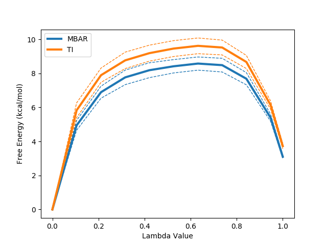

The purpose of this tutorial is to focus on the tools and analyses that ProtoMS provides for free energy calculations. Unlike the other tutorials, a set of simulation data is already provided to work with. Inside this tutorial directory is a compressed archive called data.tar.gz. It contains a parred down set of simulation data made up of three different ligand perturbations performed under a number of different protocols. To access the data first extract it using:
tar xf data.tar.gz
This creates three directories, each containing the output directories from a number of different simulations. The data in question is for the perturbation between a set of three COX2 inhibitors. The system and setup used is more fully detailed here, however the below diagram captures the relevant ligand transformations.
The provided data describes three perturbations between a series of congeneric ligands, labelled as 1, 6 and 8. Each of the directories within data.tar.gz maps to one of these perturbations. For each perturbation the requisite simulations have been performed to calculate relative free energies of hydration and binding using both a single and dual topology protocol. See the previous tutorials for details of what these calculations involve.
Basic free energy analysis has been considered in previous tutorials but here we'll take a closer look at the tools available and how to use them. As far as possible these tools have a unified interface. This mean many of the same flags and concepts will work between them. For all of the scripts using the --help flag on the command line will provide detailed descriptions of the features and how to use them.
The first port of call for free energy analyses is usually calc_dg.py. This is script designed to provide a straightforward method to extract free energies from simulation data as well as some useful analyses to understand the equilibration and convergence properties of a calculation. This script also makes a useful point of entry as is it shares many of the sames options and settings as other analysis scripts. First off let's look at a simple invocation to get a feel for the functionality.
python $PROTOMSHOME/tools/calc_dg.py -d 1t6/out1_bnd
All free energy quantities are given in kcal/mol
BAR
1t6/out1_bnd 2.99
Mean 2.99 +- 0.00
Total Mean 2.99 +- 0.00
MBAR
1t6/out1_bnd 2.99
Mean 2.99 +- 0.00
Total Mean 2.99 +- 0.00
TI
1t6/out1_bnd 3.51
Mean 3.51 +- 0.00
Total Mean 3.51 +- 0.00
The directory passed to the -d flag contains a single set of simulation data corresponding to the dual topology perturbation between ligands 1 and 6, carried out in the bound state. By default, the free energy difference is calculated using Bennett's Acceptance Ratio (BAR), Multistate BAR (MBAR) and Thermodynamic Integration. There is a fourth estimator that can be used in the analysis of GCAP simulations (see the relevant tutorial). All of the analysis scripts attempt to calculate error values by using data from different independent repeats. As we only gave calc_dg.py a single set of simulation data the errors are reported here as zero. Let's modify the previous invocation to expose some more functionality:
python $PROTOMSHOME/tools/calc_dg.py -d 1t6/out?_bnd --estimators mbar
MBAR
1t6/out1_bnd 2.99
1t6/out2_bnd 3.22
Mean 3.10 +- 0.08
Total Mean 3.10 +- 0.08
There are two key differences in the output. Firstly we used the --estimators flag to specify that we only wanted to calculate the free energy using MBAR. We'll use this sporadically throughout to help keep output at a manageable level. Secondly, we changed to using a wildcard when specify the data directory that matched two sets of simulation data. The script in this case reports both of the individual free energy values, the mean of both and the standard error. What else can we do?
python $PROTOMSHOME/tools/calc_dg.py -d 1t6/out?_bnd --pmf --estimators mbar ti

The --pmf flag requests a plot of the how the free energy changes as a function of the lambda coordinate used in the alchemical perturbation. Dashed lines represent a single standard error. This can be particularly useful in the case of TI where, due to the its dependence on numerical integration schemes, sharp gradient changes can affect the quality of the result. This likely accounts for the observed difference between TI and the other two estimators.
When calculating free energies it's important that the data included are representative of the system's ensemble average. Standard simulation protocols in ProtoMS include an equilibration period in which statistics are not collected for this purpose, however the number of steps used for this is only a standardised guess. We can consider how well equilibrated our simulation data is with calc_dg.py:
python $PROTOMSHOME/tools/calc_dg.py -d 1t6/out?_bnd --test-equilibration 0.2
This above command runs a series of calculations excluding increasing amounts of data from the start of the calculation. The idea is that if far from equilibrium configurations from the start of the simulation are biasing the calculation, then excluding them should improve our free energy estimate. This should manifest as a plateau of the free energy as more data is excluded. The above provides a clean example of this and suggests we would benefit from excluding some data. The value of 0.2 on the command line dictates that at most one fifth of the data should be excluded from the calculation. This can be easily done with:
python $PROTOMSHOME/tools/calc_dg.py -d 1t6/out?_bnd --estimators mbar -l 0.2
All free energy quantities are given in kcal/mol
MBAR
1t6/out1_bnd 2.59
1t6/out2_bnd 3.03
Mean 2.81 +- 0.15
Total Mean 2.81 +- 0.15
Another common concern is whether sufficient data have been collected to correctly estimate the free energy. Whilst a true test for convergence of simulation properties remains something of a Holy Grail, we can at least check our calculated free energy values are stable:
python $PROTOMSHOME/tools/calc_dg.py -d 1t6/out?_bnd -l 0.2 --test-convergence 0.8
Similarly to the --test-equilibration flag, the --test-convergence flag performs multiple calculations excluding differing amounts of data from the end of the calculation. The 0.8 value says that no data before 80% through the simulation should be discarded in this analysis. We've also included the -l to remove the poorly equilibrated data from the start of the simulation at the same time. The output plot suggests that our free energy estimates stabilise quite nicely towards the end of the simulation.
One final handy feature is that of the ability to simultaneously handle multiple legs of a free energy calculation. In a single topology calculation for instance it is common to perform separate calculation legs where the electrostatic and van der Waals parameters are scaled separately. Multiple uses of the -d flag allow multiple simulation legs to be summed together easily:
python $PROTOMSHOME/tools/calc_dg.py -d 1t6/out?_ele_bnd -d 1t6/out?_vdw_bnd --estimators mbar
MBAR
1t6/out1_ele_bnd 14.18
1t6/out2_ele_bnd 14.32
Mean 14.25 +- 0.05
1t6/out1_vdw_bnd 20.52
1t6/out2_vdw_bnd 20.50
Mean 20.51 +- 0.01
Total Mean 34.76 +- 0.05
It is often advantageous to be able to look in more detail at the behaviour of an individual free energy calculation. This can sometimes provide additional insight into the mechanisms driving a free energy difference however it is more frequently useful for debugging.
A unique property of Thermodynamic Integration (TI) as a free energy difference estimator is that it can be additively split into terms based on different system energy components. The script calc_ti_decomposed.py is focused on this type of analysis.
Let's arbitrarily pick a single topology calculation from the data set, say the free leg of the 1t6 perturbation. The script can then be run as:
python $PROTOMSHOME/tools/calc_ti_decomposed.py -d 1t6/out?_comb_free
FDTI: 31.929 +- 0.263
li1-solvent_COU: -0.305 +- 0.099
li1-solvent_LJ: 0.268 +- 0.168
li1_ANG: 0.704 +- 0.000
li1_BND: 16.530 +- 0.000
li1_NBC: 12.623 +- 0.002
li1_NBL: 2.106 +- 0.007
sum of terms: 31.925 +- 0.195
The first calculated output is labelled FDTI. This stands for Finite Difference Thermodynamic Integration and is the standard form of TI used by ProtoMS. This result should be the same as using the TI estimator with calc_dg.py. It is provided simply as a sanity check for the decomposed calculations beneath it and should be very similar to the sum of terms displayed last.
A good number of decomposed terms are displayed. These correspond to components of the system energy that are scaled by lambda and hence contribute to the free energy difference. Not all system energy terms are present; the list has been filtered for non-zero contributions. A graph summarising the results is also plotted. You can additionally see how the free energy for each term varies with lambda using the --pmf flag:
python $PROTOMSHOME/tools/calc_ti_decomposed.py -d out?_comb_free --pmf
We can see at a glance that two terms from the ligand are driving the majority of the free energy difference, the intramolecular bonded terms and the intramolecular Coulombic interaction. Strong contributions from changes to intramolecular bonds are typical of a single topology transformation. As (using default protocols) bonds are not sampled in the calculation this term is artifactual. It is a constant contribution that will cancel exactly when combined with the same ligand perturbation in another phase. The intramolecular Coulomb terms may also be expected to largely cancel however in this case there will be some net contribution.
Whilst we've gained some understanding of the free energy change in solvent this is of limited value due to some of the artificial contributions. We can include the gas phase of the calculation within the analysis to gain direct insight into the relative hydration free energy difference.
python $PROTOMSHOME/tools/calc_ti_decomposed.py -d 1t6/out?_comb_free -g 1t6/out?_comb_gas
FDTI: 0.032 +- 0.263
li1-solvent_COU: -0.305 +- 0.099
li1-solvent_LJ: 0.268 +- 0.168
li1_ANG: 0.001 +- 0.001
li1_NBC: 0.065 +- 0.003
li1_NBL: 0.001 +- 0.007
sum of terms: 0.030 +- 0.195
The majority of the intramolecular terms from the solvent and gas phase have cancelled with one another leaving only those that contribute to the relative free energy difference. As with calc_dg.py you can provide multiple instances of the -d and -g flags to combine multiple legs of an individual calculation. All of the data from a two-step (electrostatics then van der Waals) single topology calculation can easily be analysed with e.g.:
python $PROTOMSHOME/tools/calc_ti_decomposed.py -d 1t6/out?_ele_free -d 1t6/out?_vdw_free -g 1t6/out?_ele_gas -g 1t6/out?_vdw_gas
Similarly there is a -b flag to include bound phase simulation data to gain insight into binding free energy calculations..
python $PROTOMSHOME/tools/calc_ti_decomposed.py -d 1t6/out?_free
FDTI: 0.363 +- 1.031
li1-solvent_COU: 21.672 +- 1.149
li1-solvent_LJ: 27.630 +- 0.061
li6-solvent_COU: -21.453 +- 0.001
li6-solvent_LJ: -27.475 +- 0.055
sum of terms: 0.373 +- 1.152
You'll notice that, unlike the single topology data, there are no intramolecular terms. Instead large contributions of opposite sign come from the interaction of each solute with the surrounding system. This is because with dual topology an entire ligand is decoupled from the system whilst another is coupled in. A handy option here is the --dual flag to the script, which attempts to combine these large terms together leaving only the net effect, which is a lot easier to interpret.
python $PROTOMSHOME/tools/calc_ti_decomposed.py -d 1t6/out?_free --dual
FDTI: 0.363 +- 1.031
lig-solvent_COU: 0.219 +- 1.149
lig-solvent_LJ: 0.155 +- 0.082
sum of terms: 0.373 +- 1.152
All of the ProtoMS free energy scripts facilitate further analysis by providing the option to save their output in a convenient format. Specifically, each script may be given the --pickle flag with a file name to save its result as a pickle. A pickle is a serialisation format that allows python objects to be written directly to a file and recovered later. The practical upshot is that users can work further with or combine the results of different free energy scripts without needing to resort to spreadsheets or copy pasting data from terminals.
For more information on pickles see the python documentation here. A convenience script is provided in the tools directory to load and inspect pickles and provides a good starting point for users wanting to write their own scripts using pickled results. First lets run a simple calculation with calc_dg.py and pickle the output.
python $PROTOMSHOME/tools/calc_dg.py -d 1t6/out1_bnd/ --pickle results.pkl
Then we can inspect the output interactively with load_pickle.py. The recommended way to invoke this is:
ipython -i $PROTOMSHOME/tools/load_pickle.py -- results.pkl
If you don't have ipython available then the standard python equivalent is:
python -i $PROTOMSHOME/tools/load_pickle.py results.pkl
Either way, this should drop you into a python shell with a namespace containing the variable "data" that contains the loaded data from the pickle. The contents of the protomslib module have also been dumped into the global namespace, this is required so that python can find the required class definitions when unpickling. The below output shows a simple exploration of the contents of data to give a feel for how to work with the data structures of protomslib. Output may differ slightly between python 2 and 3.
> print(data)
{protomslib.free_energy.free_energy_base.BAR: <protomslib.free_energy.free_energy_base.Result at 0x7fd6d660e590>,
protomslib.free_energy.free_energy_base.MBAR: <protomslib.free_energy.free_energy_base.Result at 0x7fd6d65fbf90>,
protomslib.free_energy.free_energy_base.TI: <protomslib.free_energy.free_energy_base.Result at 0x7fd6d65fb9d0>}
> mbar = data[MBAR]
> mbar.dG
<Quantity: value=3.1008 error=0.0810>
> mbar.pmf
<protomslib.free_energy.free_energy_base.PMF at 0x7faa70e8efd0>
> fig, ax = plt.subplots()
> mbar.pmf.plot(ax)
<matplotlib.lines.Line2D at 0x7f92848aa290>
> plt.show()
Three custom data structures are present in the above output. Detailed information can be found in the API documentation however brief summaries of these are provided below. Broadly speaking, they together form a hierarchy of objects capturing free energy information.
A particularly useful property of the Quantity, PMF and Result objects is that they can be used together in simple arithmetic operations. Any operation correctly propagates error estimates for the combined value. Continuing from the above code:
> ti = data[TI]
> ti.dG + mbar.dG
<Quantity: value=6.8266 error=0.1720>
> ti.dG - mbar.dG
<Quantity: value=0.6249 error=0.1720>
> ti.pmf + mbar.pmf
<protomslib.free_energy.free_energy_base.PMF at 0x7f01970170d0>
> ti + mbar
<protomslib.free_energy.free_energy_base.Result at 0x7f0197017490>
> (ti + mbar).dG
<Quantity: value=6.8266 error=0.1720>
Arithmetic operations with these objects allows for free combination of different calculations to provide custom analyses.
A standard question when assessing simulation data is "how do I know my result is correct?". Whilst there is no easy answer to this question we can at least check that our simulation data are internally consistent. For free energy calculations this often takes the form of calculating "free energy cycles". As free energy is a state function it must be possible to perform multiple calculations passing through different system states and returning to the original state with a net free energy change of zero.
To provide this higher level analysis involving multiple calculations ProtoMS provides calc_dg_cycle.py.
You can call it with our example data using:
python $PROTOMSHOME/tools/calc_dg_cycle.py -d 1t6 1t8 6t8 -s + - + --single comb --est mbar
Before examining the output this gives, it's worth breaking down the command line in some detail.
Here's the output:
MBAR
dG gas dG free dG bound
1t6: 31.882 +- 0.015 31.964 +- 0.263 34.652 +- 0.069
1t8: -12.936 +- 0.018 -16.966 +- 0.048 -14.336 +- 0.153
6t8: -32.875 +- 0.019 -36.894 +- 0.002 -37.570 +- 0.088
Cycle Closure: 11.943 +- 0.030 12.035 +- 0.267 11.417 +- 0.189
ddG Solvation ddG Binding
1t6: 0.081 +- 0.263 2.688 +- 0.272
1t8: -4.030 +- 0.051 2.630 +- 0.160
6t8: -4.019 +- 0.019 -0.676 +- 0.088
Cycle Closure: 0.092 +- 0.269 -0.618 +- 0.328
As can be seen, this script does a lot of leg work. For each directory on the command line, calc_dg_cycle.py searches for the relevant ProtoMS output directories for the specified calculation type (one-step, single topology in this case). The below diagram is colour coded according to how the data from different directories map to the different reported free energy terms in the first table. Data from repeats of calculations are automatically found and used to calculate standard error values.
The second table contains data from the first that has been appropriately combined to produce physically meaningful free energies. In this case data from the gas, free and bound phases are available so free energies of solvation and binding are calculable.
The script has also used the arithmetic signs provided on the command line to calculate cycle closures for each of the data. The closures for the solvation and binding free energies are rather good, providing confidence in the results. The cycles for the individual phases (top table) do not close however. In the case of a single topology calculation this is not a cause for concern. Owing to the implementation of dummy atoms in alchemical transformations, cycles within an individual phase are not expected to close.
The analysis of dual topology calculations requires only slightly different input than the single topology version.
python $PROTOMSHOME/tools/calc_dg_cycle.py -d 1t6 1t8 6t8 -s + - + --dual --est mbar
MBAR
dG gas dG free dG bound
1t6: nan +- nan -0.619 +- 0.806 3.101 +- 0.081
1t8: nan +- nan -3.443 +- 0.189 -0.722 +- 0.171
6t8: nan +- nan -4.064 +- 0.183 -5.382 +- 0.701
Cycle Closure: nan +- nan -1.241 +- 0.848 -1.559 +- 0.726
ddG Solvation ddG Binding
1t6: -0.619 +- 0.806 3.720 +- 0.810
1t8: -3.443 +- 0.189 2.721 +- 0.255
6t8: -4.064 +- 0.183 -1.318 +- 0.725
Cycle Closure: -1.241 +- 0.848 -0.319 +- 1.116
Similarly, the output has only a few key differences. For dual topology, relative free energy calculation there is no meaningful notion of a gas phase perturbation and so these values show as nan (not a number). The free phase cycle is directly equivalent to the solvation free energy. Unlike single topology, for dual topology all of the free energy cycles should be expected to close. The cycle closure for the relative binding free energies looks better however this is deceptive. The bound phase cycle has similarly poorly closure that happens to be about the same size and sign as the free cycle. When combined together to get the relative binding free energies the fortuitous cancellation of errors masks the underlying problem.
The closure here for the solvation free energy is considerably worse than for single topology however as is also reflected in the larger standard error value. This reflects the difference in simulation protocols and the fact that the small change between ligands associated with our calculation is much better suited to single topology. For ligands with larger differences, e.g. scaffold hops, dual topology would provide a much simpler approach.
One thing to consider is that in the above section of this tutorial dealing with calc_dg.py we looked closely at an individual set of dual topology data and concluded it contained some poorly equilibrated structures near the start. Perhaps the rest of our dual topology data suffers from the same problem. Let's use the previous observation as a rule of thumb and exclude the first 20% of the simulation data from the analysis. This can be straightforwardly done as with calc_dg.py by using the -l flag.
MBAR
dG gas dG free dG bound
1t6: nan +- nan -0.258 +- 0.949 2.809 +- 0.154
1t8: nan +- nan -3.371 +- 0.225 -0.545 +- 0.017
6t8: nan +- nan -4.000 +- 0.276 -4.468 +- 1.132
Cycle Closure: nan +- nan -0.888 +- 1.013 -1.114 +- 1.142
ddG Solvation ddG Binding
1t6: -0.258 +- 0.949 3.067 +- 0.961
1t8: -3.371 +- 0.225 2.826 +- 0.225
6t8: -4.000 +- 0.276 -0.468 +- 1.165
Cycle Closure: -0.888 +- 1.013 -0.226 +- 1.527
As hoped this improves matters somewhat. The closures of the free and bound leg have improved and overall the free energies have shifted to being in better agreement with the single topology results.